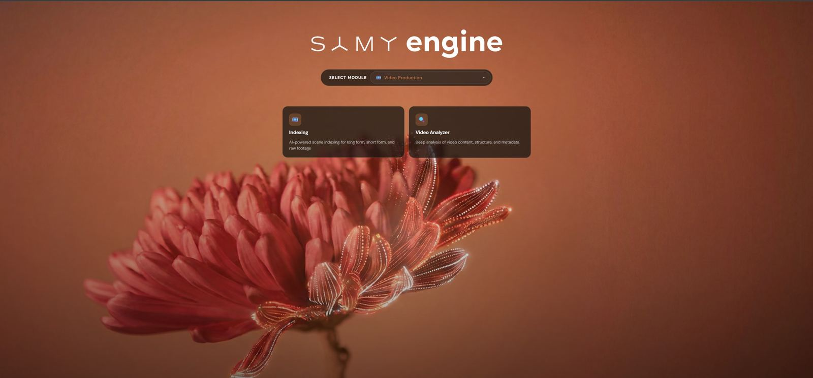
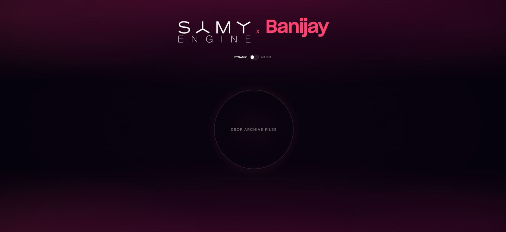
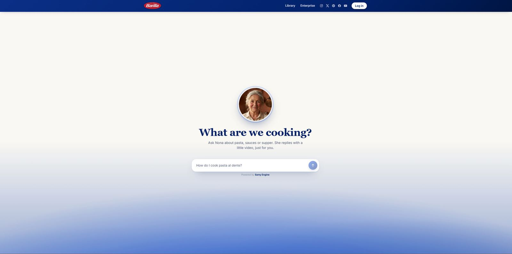
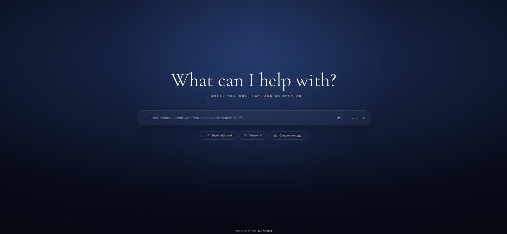

Indexing
AI scene indexing for long-form, raw and short-form footage. Entire seasons become searchable, timecoded scene data.
03 · THE MAIN EVENT
CASE STUDY · 2022 → PRESENT · SOLE ARCHITECT & LEAD ENGINEER
A production multi-module AI video platform. It automates footage indexing, semantic clip search, compilation briefs, design adaptation, subtitle localisation and audio mixing for internal teams and external media clients. I own the whole stack: infrastructure, backend automation, AI/LLM integration, the data layer and the client-facing frontends.




AI scene indexing for long-form, raw and short-form footage. Entire seasons become searchable, timecoded scene data.
Deep analysis of video content, structure and metadata.
Conversational briefing over indexed footage. Outputs edit-ready sequences and eliminates manual spotting.
Resizes, localises and generates static visuals: thumbnails, key art and campaign assets.
Context-aware subtitles and translations, delivered as ready-to-use SRTs at multi-market scale.
Automated quality checks before anything ships.
Brief-driven audio post for high-volume output.
AI UGC with persona management and scheduling. A fully AI-generated digital creator in production.
Slack → Google Sheets → n8n → Linear. Intake automated end to end.
Studio workload and resource planning across the pipeline.
Forked, customised archive deployment for the international media group. A per-client customisation log keeps the fork honest against mainline.
An air-gapped, on-prem architecture for a security-sensitive client. Fully local models (Gemma, Whisper Large-v3), zero external API calls.
Automation scripting for importing and structuring archived footage data at scale for the international poker brand.
A public-facing AI persona that answers cooking questions with generated video replies. Powered by SAMY ENGINE.
A YouTube playbook companion answering questions on content, creators, search and KPIs across markets.
finishReason safeguards and
endpoint-correct thinking config.